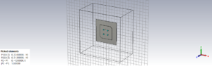
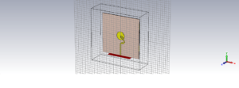
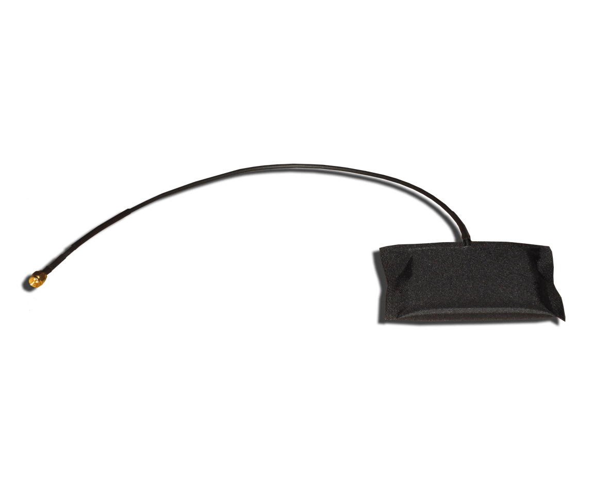
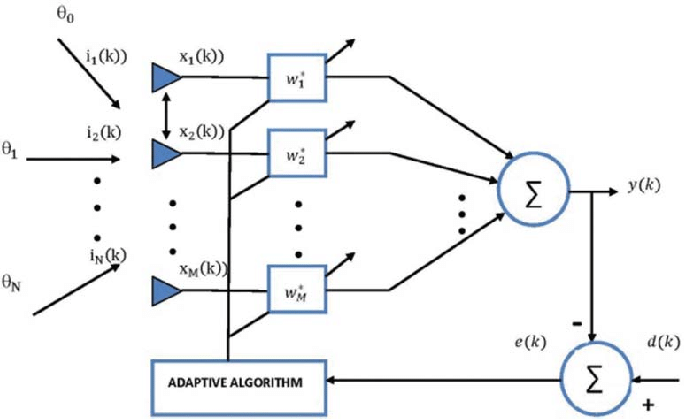

Communications
technology, also known as information technology, refers to all equipment and programs that are used to
process and communicate information. Professionals in the communication technology field specialize in
the development, installation, and service of these hardware and software systems. Individuals who enter
this field develop an understanding in the conceptions, production, evaluation, and distribution of
communication technology devices.
Design aspects of the antennas to use in mobile handset and base stations at 18 GHz and above
frequencies
Baseband Algorithms to enhance the parameters of the channels
Completed Projects / Products / Assignments
Case Study 1
Microstrip Patch Antenna
Operating Frquency: 6 GHz
Materail: FR4
Feeding Technique Used: Edge Feeding

Case Study 2
Circular Patch Antenna
Operating Frquency: 1.575 GHz
Materail: FR4
Feeding Technique Used: Back Feeding
Case Study 3
Vivaldi Antenna
Operating Frquency: 24 GHz
Materail: RT Duroid5880
Feeding Technique Used: Edge Feeding
Case Study 4
SIW Antenna
Operating Frquency: 24 GHz
Materail: Roger RO3003
Feeding Technique Used: Edge Feeding

Case Study 5
Circular Patch Antenna
Operating Frquency: 24 GHz
Materail: Roger RO3003
Feeding Technique Used: Edge Feeding
Ongoing
Projects / Products / Assignments

Wearable Antenna

Beam Forming Algorithms
Antennas for mmwave Frequency
PUBLICATIONS
K Satyanarayana Raju, Prof. GSN Raju, Dr. M. Murali, published a paper on “Influence Of Admittance
Parameters On Coupling And VSWR In Waveguide Junctions “, High Technology Letters, Volume 26, Issue
8, 2020 pages: 708 to 717, ISSN: 1006-6748.
Ramesh Varma, Dr.T.Sudeer Kumar, Dr.M.Murali, published a paper on “A Survey of Antenna Array
Optimization Using Meta-Heuristic Algorithm “, International Journal of Creative Research Thoughts
(IJCRT), Volume 8, Issue 5 May 2020 | ISSN: 2320-2882.
Pradeep. Dr R Prasanthi, Dr M. Murali, published a paper on“Low SLL Narrow beam Planar Array: Design
& Analysis “, IJRAR June 2020, Volume 7, Issue 2 www.ijrar.org (E-ISSN 2348-1269, P- ISSN
2349-5138).
Pavan Raju,Dr .A. Sri Krishna, Dr.M. Murali, published a paper on “ Classification and Filtered
Framework for DDOS Attacks in IoT of Wireless Networks “, Test Engineering and Management, Volume
83,May – June 2020 ISSN: 0193-4120 Page No. 24372 – 24385.
Pavan Raju, A. Sri Krishna, M. Murali, published a paper on “Automatic Speech Recognition System
Using Mfcc-Based Lpc Approach With Back Propagated Artificial Neural Networks”, ICTACT Journal On
Soft Computing, VOLUME: 10, ISSUE: 04, JULY 2020,Pages 2153-2159,ISSN: 2229-6956.
Pavan Raju, A. Sri Krishna , M. Murali, published a paper on“ Design and Development of Speech
Recognition: A Review ”,The International Journal of Analytical and Experimental Model Analysis,
Volume XII, Issue VIII, August/2020,Page No:810-817,ISSN: 0886-9367.
K Satyanarayana Raju, Prof. GSN Raju, Dr. M. Murali, published a paper on “Implementation Of Corner
Sliced Circularly Polarized Square Patch Antenna” Solid State Technology 63 No. 4 (2020).
D RAMESH VARMA, Dr.M.Murali, Dr.M.Vamshi Krishna, Published ”Review of wearable antennas and design
of microstrip antenna with metamaterial”, Springer book chapter ICMEET 2021
Ramesh Varma Dr.M.Murali, Dr.M.Vamshi Krishna, published a paper on “ Sidelobe reduction in an
Antenna Array using natured inspired Genetic Algorithm”, High Technology Letters,Volume 26, Issue 8,
2020ISSN NO : 1006-6748.
Ramesh Varma, Dr.M.Murali, Dr.M.Vamshi Krishna, published a paper on “ A Review Of Wearable Antennas
In The Field Of Medicine And Its Challenges “, PIERS(Communicated).
Srikala EVSDSNSLK, M.Murali, M. Vamshi Krishna, GSN Raju, published a paper on“Optimization of
linear array using modified social group optimization algorithm”, Journal of Scientific and
Industrial Research (JSIR),Vol. 80, April 2021, pp. 354-359.
Srikala EVSDSNSLK, M.Murali, M. Vamshi Krishna, GSN Raju, published a paper on“ Linear antenna array
synthesis using metaphor-less algorithm”, International Journal of Industrial Engineering
Computations(Communicated).
Ramesh Varma, Dr.M.Murali, Dr.M.Vamshi Krishna, published a paper on“ A Survey on Synthesis of
Linear antenna arrays, circular antenna arrays, conformal arrays and Beamforming Techniques, Solid
state Technology” ,Solid State Technology ,Volume: 63 Issue: 4 ,2020.
Ramesh Varma ,Dr.M.Murali ,Dr.M.Vamshi Krishna, published a paper on“ Reducing Interference and
Thinning of an Antenna Array using Genetic Algorithm “ , IJE (Communicated).
D RAMESH VARMA, Dr.M.Murali, Dr.M.Vamshi Krishna, published a paper on“Miniaturized Novel H Shaped
Patch Antenna for Bio Medical Applications “, PIER (Communicated).
K Satyanarayana Raju, Prof. GSN Raju, Dr. M. Murali, published a paper on“ Implementation Of Corner
Sliced Circularly Polarized Square Patch Antenna K “, solid state technology, Volume: 63 Issue: 4
Publication Year: 2020, pages: 1321 to 1328.
Dr M Murali, Dr Anthony Sunny Dayal Pendurthy, B. Yashwanth Sai, P. Sai Kiran“Design and Analysis of
a Multispectral Disk Shaped Microstrip Patch Ariel”, (Communicated).
Dr M Murali ,Dr Anthony Sunny Dayal Pendurthy, K.Sanketh, M.Vivek Vardhan Achari, “ Design and
Analysis of a Slit Microstrip Patch Ariel for 5G Telecommunication Applications”, Wesleyan Journal
of Research Journal ( Communicated).
V.S.D.S.N.S.L.K.Srikala, Dr.M.Murali ,M.Vamsi Krishna, GSN Raju, published a paper onElement Failure
Correction Techniques of Linear Array Antenna- A Short Review, TEST Engineering & Management May –
June 2020,ISSN: 0193-4120 Page No. 14182 – 14187.
L.N.Acharyulu ,Dr M.Murali , G.Arun Manohar published a paper on Smart Transportation Using
Missiles, Test Engineering & Management, : 0193-4120 Page No. 17195 – 17197, Volume 83 Page Number:
17195 - 17197 Publication Issue: March - April 2020.
Jogi Naidu, Prof G.S.N. Raju, Dr. M. Muralipublished a paper onA Review On Bandwidth Improvement
Techniques Of A Waveguide Arrays ,Journal Of Critical Reviews
Ramesh Varma, Dr.M.Murali , Dr.T.Sudeer Kumar “ A Survey Of Antenna ArrayOptimization Using
Meta-HeuristicAlgorithm” International Journal Of Creative Research Thoughts (IJCRT) ,Volume 8,
Issue 5 May 2020 | ISSN: 2320-2882
Vamshi M Krishna, G S N Raju and S Mishra,"Generation of Low Sidelobe Difference Pattern using
Nature Inspired Metaheuristic Algorithms" International Journal of Computer Applications
143(3):29-35, June 2016.
Vamshi Krishna., M, Raju, G.S.N., and Mishra, S “Non-Uniform Circular Array Synthesis using Cuckoo
Search Optimization”, International Journal of Advanced Technology and Innovative Research, ISSN
2348-2370, Volume No.08, Issue No.05, May 2016.
Vamshi Krishna., M, Raju, G.S.N., and Mishra, S., “Null Positioning in Circular Arrays using Cuckoo
Search Algorithm” ,International Journal of Scientific Engineering and Technology Research, ISSN
2319-8885, Volume No.05, Issue No.11, May-2016.
Prabhat K. Patnaik, Dhruba C. Panda, M. Vamshi Krishna,” Different Fractal Antenna Structure
Analysis using ANN”, International Journal of Innovative Technology and Exploring Engineering
(IJITEE), Vol.: 9 Issue:3 Page No.: 1787-1791 ,Mar 2020.
Shibashis Pradhan, Deepak Kumar Barik, Dr M Vamshi Krishna, Sujatarani Raut ,” Generation of
Spreading Codes with Minimum Correlation using Sorting Genetic Algorithm- II”, IJITEE -International
Journal of Innovative Technology and Exploring Engineering Vol.:9 Issue: 1, November 2019.
Kunja Bihari Swain, M Vamshi Krishna, Murthy Cherukuri, Satya Sopan Mahato, “ Situational Awareness
Enhancement in Transmission Lines using NI Based PMU ”, International Journal of Innovative
Technology and Exploring Engineering (IJITEE) ISSN: 2278-3075, Volume 9,Issue 3, Pages 2987-
2997,Publisher Blue Eyes Intelligence Engineering & Sciences Publication.
Sairam Vamsi, Dr. M.Vamsi Krishna, Dr. T.Sudheer Kumar, “Channel Estimation Techniques for OFDM and
GFDM: A Review”, Test Engineering and Management, Article Info Volume 83, Page Number: 17143 –
17149, Publication Issue: March - April 2020.
V.S.D.S.N.S.L.K.Srikala, M.Vamsi Krishna, GSN Raju, M.Murali “Element Failure Correction Techniques
of Linear Array Antenna- A Short Review”, Test Engineering and Management , Article Info Volume 83,
Page Number: 14182 - 14187,Publication Issue: May - June 2020.
Vamshi Krishna A.V.S Swathi , V.V.S.S.S Chakravarthy “Techniques of Optimizing Circular Array Using
Novel Evolutionary Computing Tools”, Test Engineering and Management , Article Info Volume 83, Page
Number: 14204 - 14207,Publication Issue: May- June 2020.
Vamshi Krishna Akash Kumar Gupta, P S R Chowdary “Trends in IoT Antenna Design- A Brief Review”,
Test Engineering and Management, Article Info Volume 83, Page Number: 14198 - 14203, Publication
Issue: May - June 2020.
Vamshi Krishna., M, Raju, G.S.N., and Mishra, S.,” Sidelobe Level Reduction in Linear Antenna Array
synthesis Using Cuckoo Search & Accelerated Particle Swarm Algorithms”, Proceedings of Springer
International Conference on Micro- Electronics, Electromagnetics and
Vamshi Krishna., M, Raju, G.S.N., and Mishra, S.,” Design of linear and circular arrays using
natural search algorithms for generation of low sidelobe patterns ”, Proceedings on IEEE
International Conference on Electromagnetic Compatibility
Vamshi Krishna., M, Raju, G.S.N., and Mishra, S.,” Synthesis of Optimal Sum and Difference Patterns
using Cuckoo Search Algorithm”, 2nd International Conference on Sustainable Computing Techniques in
Engineering, Science and Management, January 27-28,2017.
Vamshi Krishna., M, Raju, G.S.N., and Mishra, S.,” Design of Linear and Circular Arrays Using
Natural Search Algorithms for Generation of Low Side Lobe Patterns ”, Proceedings of Springer
International Conference on Micro-Electronics, Electromagnetics and Telecommunications.
Srikala EVSDSNSLK, M. Vamshi Krishna, GSN Raju,” Pattern Recovery In Linear Array Antenna Using
Flower Pollination Algorithm ”, 2019 IEEE International Conference on Intelligent Systems and Green
Technology (ICISGT), 10.1109/ICISGT44072.2019.00027, 29- 30 June 2019.
M Vamshi Krishna T Sairam Vamsi, T Sudheer Kumar,” Impact Analysis of Black Hole,Flooding Attacks
and Enhancements in MANET Using SHA-3 Keccak Algorithm”, Lecture Notes in Electrical Engineering,
Volume 655, Pages 105-113. Springer, Singapore
M Vamshi Krishna Anil Kumar Gupta, S Suresh, P Satish Rama Chowdary,” DGS -Based TShaped Patch
Antenna for 5G Communication applications ”, Lecture Notes in Electrical Engineering, Volume 655,
Pages 11-19. Springer, Singapore.
Prabhat K. Patnaik, Deepak Kumar Barik, Shibashis Pradhan, Subhraraj panda and Chandra Sekhar Dash
“Parameter Analysis and Different Geometrical Approach for Ultra-Wideband Planar Antenna", Indian
Journal of Natural Sciences, Vol 10, Issue 60, pp 19973-19980, June 2020
Shibashis Pradhan, Prabhat Kumar Patnaik and Subhraraj Panda and ” Superposition Modulation and its
Power Distribution Method ”, Indian Journal of Natural Sciences, Vol 10, Issue 59, pp 18798-18803,
April 2020.
Deepak Kumar Barik, Prabhat K Patnaik, Subhraraj panda and Shibashis Pradhan, “Analysis and Report
Generation of 4G LTE Drive Test: A Case Studies ”, Indian Journal of Natural Sciences, Vol 10, Issue
60, pp 23379-23382, June 2020
Deepak Kumar Barik, Subhraraj panda, Shibashis Pradhan and Prabhat K Patnaik,” Drive test Analysis
for a 3rd Generation of GSM System and its EMF Survey ”, Indian Journal of Natural Sciences, Vol 10,
Issue 60, pp 23372-23377, June 2020.
Deepak Kumar Barik, Chandra Sekhar Dash, Prabhat K Patnaik and Shibashis Pradhan, ” A Comparative
Design and Analysis of Broadband Rectenna application to wireless Energy Generation ”, Indian
Journal of Natural Sciences, Vol 10, Issue 60, pp 23369-23372, June 2020
Prabhat K. Patnaik," A Novel approach of Parameter Extraction of Distributed MEMS Transmission Line
using Neural Network ”, International Journal of Engineering, Science and Mathematics, Vol 6, Issue
8,pp,Dec 2017.
Prabhat K. Patnaik, Dhruba C. Panda “A Simple and Elegant Technique to Improve Hammerstad Formula to
Calculate Resonant Frequency of Microstrip Antenna on Thick Substrates”, International Symposium on
Antennas & Propagation APSYM-2014, Dec 17-19 2014, Cochin.
Prabhat K. Patnaik etal, “Fast Extraction of Resonant Frequency of Square Ring Microstrip antenna
using Neural Network Approach” International Journal of Power System Operation and Energy Management
ISSN (PRINT): 2231 – 4407, Volume-3, Issue-2, pp-60-62, 2013.
Prabhat K. Patnaik,Dhruba C. Panda, "Fast Extraction of L & C Parameters of MEMS Transmission Line
using Neural Network ” Proc. IEEE Applied Electromagnetics Conference(AEMC-2013), Dec 18-20
2013,KIIT University, Bhubaneswar.
Prabhat K. Patnaik,Dhruba Charan Panda, " CAD modeling of Complex Resonant frequencies of a
Rectangular Microstrip Patch with a Superstrate using Complex Backpropagation Algorithm" Proc. IEEE
Applied Electromagnetics Conference(AEMC-2013), Dec 18-20,KIIT University, Bhubaneswar.
Prabhat K. Patnaik etal,“Fast Extraction of Resonant Frequency of Square Ring Micro-strip antenna
using Neural Network Approach” Proc. International conference on Communication ,Control and
Instrumentation(ICCCI-2013)” ,October 25th-27th , GIET,Gunupur, INDIA pp-195-197,
ISBN:978-93-83060-15-3
Prabhat K. Patnaik etal, “Fast Extraction of Resonant Frequency of Square Ring Microstrip antenna
using Neural Network Approach” International Journal of Power System Operation and Energy Management
ISSN (PRINT): 2231 – 4407, Volume-3, Issue-2, pp-60-62, 2013.
Prabhat K. Patnaik,Dhruba C. Panda, "Fast Extraction of L & C Parameters of MEMS Transmission Line
using Neural Network ” Proc. IEEE Applied Electromagnetics Conference(AEMC-2013), Dec 18-20
2013,KIIT University, Bhubaneswar.
Prabhat K. Patnaik, Dhruba C. Panda “A Simple and Elegant Technique to Improve Hammerstad Formula to
Calculate Resonant Frequency of Microstrip Antenna on Thick Substrates”, International Symposium on
Antennas & Propagation APSYM-2014, Dec 17-19 2014, Cochin.
Vamshi M Krishna, G S N Raju and S Mishra,"Generation of Low Sidelobe Difference Pattern using
Nature Inspired Metaheuristic Algorithms" International Journal of Computer Applications
143(3):29-35, June 2016.
Vamshi Krishna., M, Raju, G.S.N., and Mishra, S “Non-Uniform Circular Array Synthesis using Cuckoo
Search Optimization”, International Journal of Advanced Technology and Innovative Research, ISSN
2348-2370, Volume No.08, Issue No.05, May 2016.
Vamshi Krishna., M, Raju, G.S.N., and Mishra, S., “Null Positioning in Circular Arrays using Cuckoo
Search Algorithm” ,International Journal of Scientific Engineering and Technology Research, ISSN
2319-8885, Volume No.05, Issue No.11, May-2016.
Vamshi Krishna., M, Raju, G.S.N., and Mishra, S.,” Synthesis of Optimal Sum and Difference Patterns
using Cuckoo Search Algorithm”, 2nd International Conference on Sustainable Computing Techniques in
Engineering, Science and Management, January 27-28,2017.
Prabhat K. Patnaik," A Novel approach of Parameter Extraction of Distributed MEMS Transmission Line
using Neural Network ”, International Journal of Engineering, Science and Mathematics, Vol 6, Issue
8,pp,Dec 2017.
Shibashis Pradhan, Deepak Kumar Barik, Dr M Vamshi Krishna, Sujatarani Raut ,” Generation of
Spreading Codes with Minimum Correlation using Sorting Genetic Algorithm- II”, IJITEE -International
Journal of Innovative Technology and Exploring Engineering Vol.:9 Issue: 1, November 2019.
Srikala EVSDSNSLK, M. Vamshi Krishna, GSN Raju,” Pattern Recovery In Linear Array Antenna Using
Flower Pollination Algorithm ”, 2019 IEEE International Conference on Intelligent Systems and Green
Technology (ICISGT), 10.1109/ICISGT44072.2019.00027, 29- 30 June 2019.
K Satyanarayana Raju, Prof. GSN Raju, Dr. M. Murali, published a paper on “Influence Of
Admittance
Parameters On Coupling And VSWR In Waveguide Junctions “, High Technology Letters, Volume 26,
Issue
8, 2020 pages: 708 to 717, ISSN: 1006-6748.
Ramesh Varma, Dr.T.Sudeer Kumar, Dr.M.Murali, published a paper on “A Survey of Antenna Array
Optimization Using Meta-Heuristic Algorithm “, International Journal of Creative Research
Thoughts
(IJCRT), Volume 8, Issue 5 May 2020 | ISSN: 2320-2882.
Pradeep. Dr R Prasanthi, Dr M. Murali, published a paper on“Low SLL Narrow beam Planar Array:
Design
& Analysis “, IJRAR June 2020, Volume 7, Issue 2 www.ijrar.org (E-ISSN 2348-1269, P- ISSN
2349-5138).
Pavan Raju,Dr .A. Sri Krishna, Dr.M. Murali, published a paper on “ Classification and Filtered
Framework for DDOS Attacks in IoT of Wireless Networks “, Test Engineering and Management,
Volume
83,May – June 2020 ISSN: 0193-4120 Page No. 24372 – 24385.
Pavan Raju, A. Sri Krishna, M. Murali, published a paper on “Automatic Speech Recognition System
Using Mfcc-Based Lpc Approach With Back Propagated Artificial Neural Networks”, ICTACT Journal
On
Soft Computing, VOLUME: 10, ISSUE: 04, JULY 2020,Pages 2153-2159,ISSN: 2229-6956.
Pavan Raju, A. Sri Krishna , M. Murali, published a paper on“ Design and Development of Speech
Recognition: A Review ”,The International Journal of Analytical and Experimental Model Analysis,
Volume XII, Issue VIII, August/2020,Page No:810-817,ISSN: 0886-9367.
K Satyanarayana Raju, Prof. GSN Raju, Dr. M. Murali, published a paper on “Implementation Of
Corner
Sliced Circularly Polarized Square Patch Antenna” Solid State Technology 63 No. 4 (2020).
Ramesh Varma Dr.M.Murali, Dr.M.Vamshi Krishna, published a paper on “ Sidelobe reduction in an
Antenna Array using natured inspired Genetic Algorithm”, High Technology Letters,Volume 26,
Issue 8,
2020ISSN NO : 1006-6748.
Ramesh Varma, Dr.M.Murali, Dr.M.Vamshi Krishna, published a paper on“ A Survey on Synthesis of
Linear antenna arrays, circular antenna arrays, conformal arrays and Beamforming Techniques, Solid
state Technology” ,Solid State Technology ,Volume: 63 Issue: 4 ,2020.
K Satyanarayana Raju, Prof. GSN Raju, Dr. M. Murali, published a paper on“ Implementation Of Corner
Sliced Circularly Polarized Square Patch Antenna K “, solid state technology, Volume: 63 Issue: 4
Publication Year: 2020, pages: 1321 to 1328.
V.S.D.S.N.S.L.K.Srikala, Dr.M.Murali ,M.Vamsi Krishna, GSN Raju, published a paper onElement Failure
Correction Techniques of Linear Array Antenna- A Short Review, TEST Engineering & Management May –
June 2020,ISSN: 0193-4120 Page No. 14182 – 14187.
L.N.Acharyulu ,Dr M.Murali , G.Arun Manohar published a paper on Smart Transportation Using
Missiles, Test Engineering & Management, : 0193-4120 Page No. 17195 – 17197, Volume 83 Page Number:
17195 - 17197 Publication Issue: March - April 2020.
Ramesh Varma, Dr.M.Murali , Dr.T.Sudeer Kumar “ A Survey Of Antenna ArrayOptimization Using
Meta-HeuristicAlgorithm” International Journal Of Creative Research Thoughts (IJCRT) ,Volume 8,
Issue 5 May 2020 | ISSN: 2320-2882
Prabhat K. Patnaik, Dhruba C. Panda, M. Vamshi Krishna,” Different Fractal Antenna Structure
Analysis using ANN”, International Journal of Innovative Technology and Exploring Engineering
(IJITEE), Vol.: 9 Issue:3 Page No.: 1787-1791 ,Mar 2020.
Sairam Vamsi, Dr. M.Vamsi Krishna, Dr. T.Sudheer Kumar, “Channel Estimation Techniques for OFDM and
GFDM: A Review”, Test Engineering and Management, Article Info Volume 83, Page Number: 17143 –
17149, Publication Issue: March - April 2020.
V.S.D.S.N.S.L.K.Srikala, M.Vamsi Krishna, GSN Raju, M.Murali “Element Failure Correction Techniques
of Linear Array Antenna- A Short Review”, Test Engineering and Management , Article Info Volume 83,
Page Number: 14182 - 14187,Publication Issue: May - June 2020.
Vamshi Krishna A.V.S Swathi , V.V.S.S.S Chakravarthy “Techniques of Optimizing Circular Array Using
Novel Evolutionary Computing Tools”, Test Engineering and Management , Article Info Volume 83, Page
Number: 14204 - 14207,Publication Issue: May- June 2020.
Vamshi Krishna Akash Kumar Gupta, P S R Chowdary “Trends in IoT Antenna Design- A Brief Review”,
Test Engineering and Management, Article Info Volume 83, Page Number: 14198 - 14203, Publication
Issue: May - June 2020.
Prabhat K. Patnaik, Deepak Kumar Barik, Shibashis Pradhan, Subhraraj panda and Chandra Sekhar Dash
“Parameter Analysis and Different Geometrical Approach for Ultra-Wideband Planar Antenna", Indian
Journal of Natural Sciences, Vol 10, Issue 60, pp 19973-19980, June 2020
Shibashis Pradhan, Prabhat Kumar Patnaik and Subhraraj Panda and ” Superposition Modulation and its
Power Distribution Method ”, Indian Journal of Natural Sciences, Vol 10, Issue 59, pp 18798-18803,
April 2020.
Deepak Kumar Barik, Prabhat K Patnaik, Subhraraj panda and Shibashis Pradhan, “Analysis and Report
Generation of 4G LTE Drive Test: A Case Studies ”, Indian Journal of Natural Sciences, Vol 10, Issue
60, pp 23379-23382, June 2020
Deepak Kumar Barik, Subhraraj panda, Shibashis Pradhan and Prabhat K Patnaik,” Drive test Analysis
for a 3rd Generation of GSM System and its EMF Survey ”, Indian Journal of Natural Sciences, Vol 10,
Issue 60, pp 23372-23377, June 2020.
Deepak Kumar Barik, Chandra Sekhar Dash, Prabhat K Patnaik and Shibashis Pradhan, ” A Comparative
Design and Analysis of Broadband Rectenna application to wireless Energy Generation ”, Indian
Journal of Natural Sciences, Vol 10, Issue 60, pp 23369-23372, June 2020
Prabhat K. Patnaik,Dhruba Charan Panda, " CAD modeling of Complex Resonant frequencies of a
Rectangular Microstrip Patch with a Superstrate using Complex Backpropagation Algorithm" Proc. IEEE
Applied Electromagnetics Conference(AEMC-2013), Dec 18-20,KIIT University, Bhubaneswar.
D RAMESH VARMA, Dr.M.Murali, Dr.M.Vamshi Krishna, Published ”Review of wearable antennas and design
of microstrip antenna with metamaterial”, Springer book chapter ICMEET 2021
Srikala EVSDSNSLK, M.Murali, M. Vamshi Krishna, GSN Raju, published a paper on“Optimization of
linear array using modified social group optimization algorithm”, Journal of Scientific and
Industrial Research (JSIR),Vol. 80, April 2021, pp. 354-359.
Ramesh Varma, Dr.M.Murali, Dr.M.Vamshi Krishna, published a paper on “ A Review Of Wearable Antennas
In The Field Of Medicine And Its Challenges “, PIERS(Communicated).
Srikala EVSDSNSLK, M.Murali, M. Vamshi Krishna, GSN Raju, published a paper on“ Linear antenna array
synthesis using metaphor-less algorithm”, International Journal of Industrial Engineering
Computations(Communicated).
Ramesh Varma ,Dr.M.Murali ,Dr.M.Vamshi Krishna, published a paper on“ Reducing Interference and
Thinning of an Antenna Array using Genetic Algorithm “ , IJE (Communicated).
D RAMESH VARMA, Dr.M.Murali, Dr.M.Vamshi Krishna, published a paper on“Miniaturized Novel H Shaped
Patch Antenna for Bio Medical Applications “, PIER (Communicated).
Dr M Murali, Dr Anthony Sunny Dayal Pendurthy, B. Yashwanth Sai, P. Sai Kiran“Design and Analysis of
a Multispectral Disk Shaped Microstrip Patch Ariel”, (Communicated).
Dr M Murali ,Dr Anthony Sunny Dayal Pendurthy, K.Sanketh, M.Vivek Vardhan Achari, “ Design and
Analysis of a Slit Microstrip Patch Ariel for 5G Telecommunication Applications”, Wesleyan Journal
of Research Journal ( Communicated).
Jogi Naidu, Prof G.S.N. Raju, Dr. M. Muralipublished a paper onA Review On Bandwidth Improvement
Techniques Of A Waveguide Arrays ,Journal Of Critical Reviews
Kunja Bihari Swain, M Vamshi Krishna, Murthy Cherukuri, Satya Sopan Mahato, “ Situational Awareness
Enhancement in Transmission Lines using NI Based PMU ”, International Journal of Innovative
Technology and Exploring Engineering (IJITEE) ISSN: 2278-3075, Volume 9,Issue 3, Pages 2987-
2997,Publisher Blue Eyes Intelligence Engineering & Sciences Publication.
Vamshi Krishna., M, Raju, G.S.N., and Mishra, S.,” Sidelobe Level Reduction in Linear Antenna Array
synthesis Using Cuckoo Search & Accelerated Particle Swarm Algorithms”, Proceedings of Springer
International Conference on Micro- Electronics, Electromagnetics and
Vamshi Krishna., M, Raju, G.S.N., and Mishra, S.,” Design of linear and circular arrays using
natural search algorithms for generation of low sidelobe patterns ”, Proceedings on IEEE
International Conference on Electromagnetic Compatibility
Vamshi Krishna., M, Raju, G.S.N., and Mishra, S.,” Design of Linear and Circular Arrays Using
Natural Search Algorithms for Generation of Low Side Lobe Patterns ”, Proceedings of Springer
International Conference on Micro-Electronics, Electromagnetics and Telecommunications.
M Vamshi Krishna T Sairam Vamsi, T Sudheer Kumar,” Impact Analysis of Black Hole,Flooding Attacks
and Enhancements in MANET Using SHA-3 Keccak Algorithm”, Lecture Notes in Electrical Engineering,
Volume 655, Pages 105-113. Springer, Singapore
M Vamshi Krishna Anil Kumar Gupta, S Suresh, P Satish Rama Chowdary,” DGS -Based TShaped Patch
Antenna for 5G Communication applications ”, Lecture Notes in Electrical Engineering, Volume 655,
Pages 11-19. Springer, Singapore.
Prabhat K. Patnaik etal,“Fast Extraction of Resonant Frequency of Square Ring Micro-strip antenna
using Neural Network Approach” Proc. International conference on Communication ,Control and
Instrumentation(ICCCI-2013)” ,October 25th-27th , GIET,Gunupur, INDIA pp-195-197,
ISBN:978-93-83060-15-3


 PUBLICATIONS
PUBLICATIONS DOMAIN
COURSES
DOMAIN
COURSES  LABS
LABS software
tools
software
tools